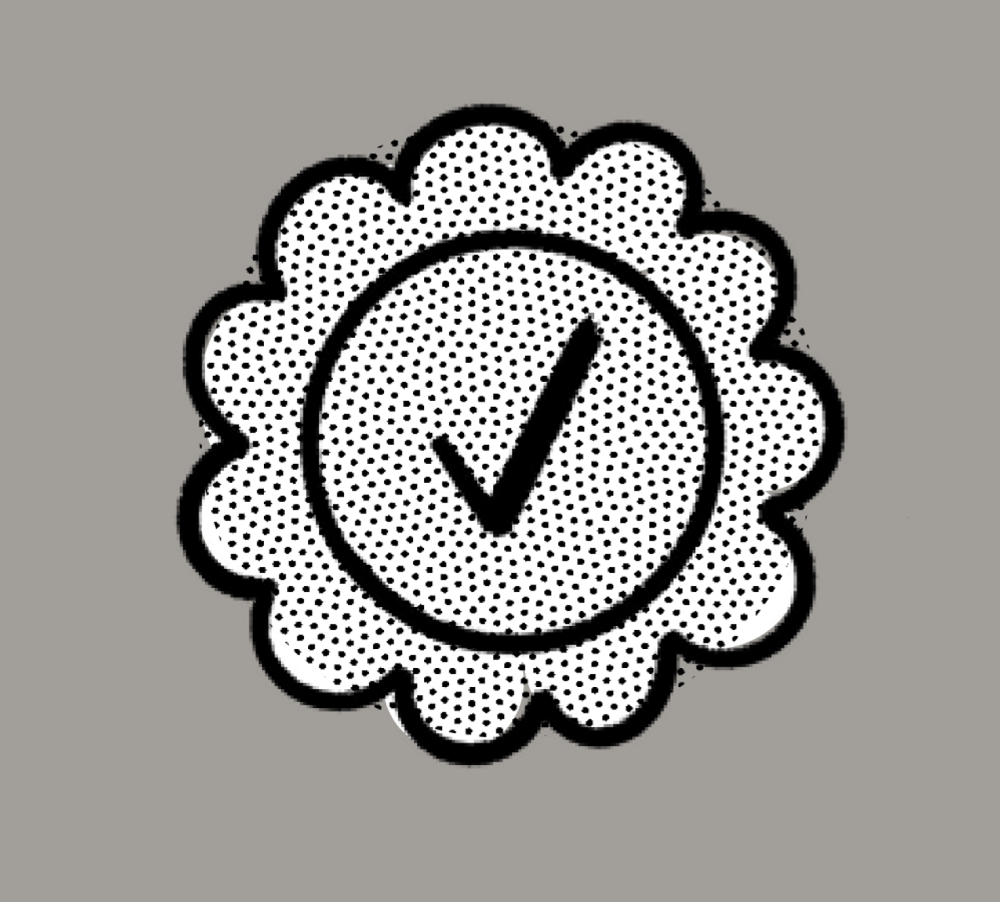

Notion基礎バッジ
取得済み ✓
Notionワークフローバッジ
取得済み ✓
Notion上級バッジ
取得済み ✓

Notion管理者認定
挑戦中
WHO WE ARE
塾の現場を知っているから、
塾の現場を知っているから、
現場で回る仕組みにできる。
多校舎塾マネジメントBASEは、実際の塾運営で起きる生徒対応・講師管理・保護者対応・時間割作成・請求確認の流れをもとに設計しています。
欠席、成績、面談履歴、講師との相性。それぞれの情報がバラバラだと、現場の違和感は見えにくくなります。
多校舎塾マネジメントBASEは、貴塾の運用に合わせて情報をつなぎ、現場が使い続けられ、本部が判断に使える管理基盤をつくります。